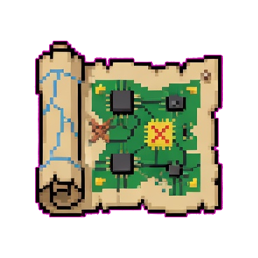

ChatPCB
Use ChatPCB with your ChatGPT plan
You'll sign in using your system browser. Never enter your password in ChatPCB.
(opens in your browser)
Start a project
Workflow
Circuit
Layout
Fab
Create a project to start with the circuit concept.
Create a project to send a circuit request.
Technical details

Apply schematic draft?
The schematic file does not change until you apply.
No patch preview active.